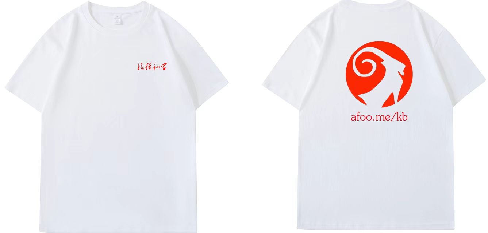
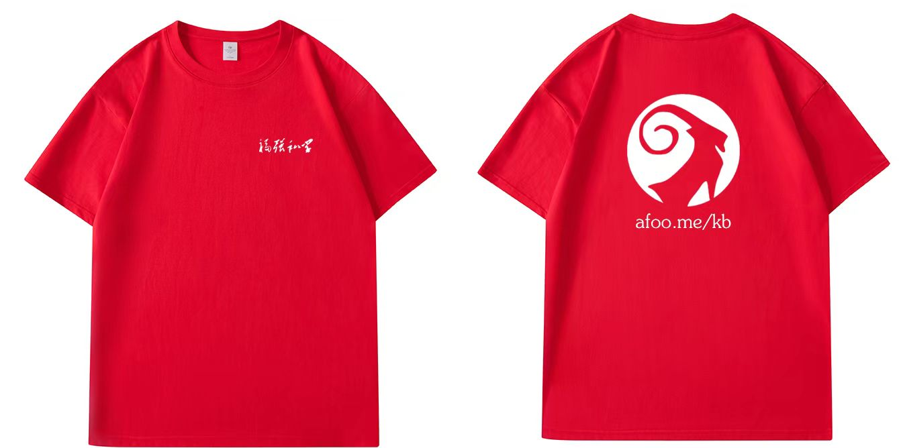

新“新四化建设”
王福强
某CEO说很多年前被我的新四化建设给惊艳到了，我是不记得当时的新四化建设具体指哪四个指导工作的方针政策了，大概是自动化、服务化这些吧，总之那个时候肯定局限在技术领域。
今天，跟大家汇报个新的四化建设，既然前面已经有了一个新四化建设，那么，这个新的四化建设就叫“新’新四化建设’”吧😉
新“新四化建设”是：
- 技术产品化
- 产品渠道化
- 渠道数据化
- 一切媒体化
有CEO帮我中间又插入了两个化（数据资源化、资源价值化），但这个跟我要表达的主线岔道了，可以改天再谈，可以放到智能化与AI化的领域话题里去。
这新“新四化建设”其实更往企业的营销相关领域去了…
技术产品化
技术产品化其实很容易理解，技术需要依托产品来输出价值， 就连英伟达和Intel也得把高精尖技术通过GPU/CPU/TPU这样的产品来服务客户，总不能指望所有人都能明白如何从沙子制造出计算机吧？
所以，技术同学在晋升到P7/P8甚至更高级别的时候，一定要有个意识，这个时候你得起码有点儿产品意识了，否则，可能晋升不了，即使你觉得自己技术挺牛逼的…
产品渠道化
做技术的重视技术，做产品的也重视产品，但产品要卖出去才能体现出其价值，所以，做产品也要考虑渠道属性，尽量降低渠道的门槛，甚至于还要根据渠道的特性来反向定制产品。
我在一开始做「福强私学」这个内容产品的时候，原本只是面向PC这个端，支付也是只提供了PC端基于Web的扫码支付，但后来发现很多同学其实更习惯直接手机上访问、浏览并支付，所以，我就在支付渠道上又根据反馈，新增了基于手机微信端的支付以及基于支付宝的支付渠道。
另外，为了减少用户on board的繁琐，也提供了一键购买（后台自动注册）的链路支持，目的也是降低用户访问门槛。（原来需要先注册再购买，新用户链路比较长）
总之，一切降低用户门槛的事情，一切方便用户习惯走的渠道，产品层面都可以配合，这就是产品渠道化的意义。
这个理念我记得应该是看某本书的时候，作者讲DTC（Direct To Customer）的章节提到的。
渠道数据化
没有数据的支撑，基本上就是瞎忙活。
所以，渠道效果好不好，哪些渠道重点突击，哪些渠道适当放放，都需要以数据为准绳，否则没有依据来做合理的资源调配和排兵布阵。
什么AB测试啦，灰度发布了，都是渠道数据化之后才能干的事情。
一切媒体化
这是昨天看小马宋的「卖货真相」里提到的一个理念，我觉得很有启发，尤其里面提到的“标准石油，每桶4美元”的故事，印象尤其深刻 (当然，这个故事很可能也是编的，不一定是真事儿，下面是网上找到的某个版本，非书中内容)：
由洛克菲勒创办的美国标准石油公司是当时世界上最大的石油生产、经销商，那时每桶石油的售价是4美元，公司的宣传口号就是：每桶4美元的标准石油。他的公司有一个名叫阿基勃特的基层推销员，无论外出、购物、吃饭、付账，甚至给朋友写信，只要有签名的机会，都不忘写上“每桶4美元的标准石油”。有时，阿基勃特甚至不写自己的名字，而只写这句话代替自己的签名。
时间久了，同事们都开玩笑地称他为“每桶4美元”。4年后的一天，洛克菲勒无意中听说了此事，非常赞赏，于是邀请阿基勃特共进晚餐，并问他为什么这么做，阿基勃特说：“这不是公司的宣传口号吗?”洛克菲勒说：“你觉得工作之外的时间里，还有义务为公司宣传吗?”阿基勃特反问道：“为什么不呢?难道工作之外的时间里，我就不是这个公司的一员吗?我多写一次不就多一个人知道吗?”
洛克菲勒对阿基勃特的举动大为赞叹，开始着意培养他。又过了5年，洛克菲勒卸职，他没有将第二任董事长的职位交给自己的儿子，而是交给了阿基勃特。这一任命，出乎所有人的意料，包括阿基勃特自己。其实，人们不应该感到意外，一个把公司的命运时刻放在自己心里的人，自然会受到老板的信赖;一个有一分热便发一分光的人，老板自然敢把公司要务托付给他。事后的结果证明，洛克菲勒的任命是一个英明的决定，在阿基勃特的领导下，美国标准石油公司更加兴旺繁荣。
mmp，人家怎么能把营销这个事情干得这么细、这么勤，我怎么没做到呢！所以，马上下单了两件T恤，本着trial & error的理念，先试做，验证实际面料和工艺之后，再决定要不要放量：


卖货嘛，不丢人，尤其还是卖自己的货😉
写在最后的话
营销只是企业经营的一个职能和板块儿，所以，在重视营销的同时，也不要忘了企业的底层经营逻辑哟～


开天窗，拉认知，订阅「福报」，即刻拥有自己的全模态人工智能。